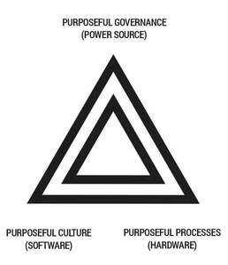
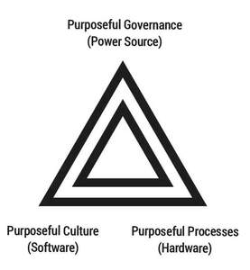

Trade Mark Journal No.2025/045 7 November 2025
UK00004278327 15 October 2025 (35)
Mark 1

Mark 2

- Class 35
- Administration and management; administration and management of subject matter experts focused on governance, strategy, policy design, and policy implementation; administration and management of citizens, communities, practitioners, leaders and subject matter experts focused on governance, strategy, policy design, and policy implementation; administration and management of individuals and groups focused on governance, strategy, policy design and policy implementation; administration and management of a collective group of individuals, organisations and government officials focused on governance, strategy, policy design and policy implementation; administration and management of a collective of governance experts, strategy experts, policy experts, organisational psychologists, neuroscientists, behavioural scientists, data scientists and change management experts; stewardship of cross generational groups of citizens, governance experts and policy experts; stewardship of a cross generational collective of purposeful citizens; administration and management of cross generational communities collectively focused on governance, purposeful policy and practice; administration and management of cross generational individuals, groups, communities and organisations collectively focused on purpose, policy, process and people; administration and management of cross generational individuals, groups, communities and organisations collectively focused on purpose, people, place and planet; administration and management of cross generational communities collectively focused on policy, impact and collaborative change; administration and management of cross generational communities collectively focused around purpose, impact and future generations; administration and management of cross generational communities collectively focused on citizenship and future generations; administration and management of cross generational communities; community administration and management; government administration and management; administration, management and display of citizens roles, citizen titles, role descriptions and personal profiles; administration, management and display of organisational roles, job titles, job descriptions and personal profiles; administration, management and display of community roles, job titles, job descriptions and personal profiles; administration, management and display of government roles, job titles, job descriptions and personal profiles; administration, management and display of organisational roles, including strategic, policy, and implementation roles; administration and management of community activities, impactful collaborative ventures, collective policy making, co-operative action, change programmes, and projects; administration and management of collaborative ventures, collective policy making, co-operative action, change programmes and projects; advertising; marketing; advertising, marketing and promotion of individuals, groups and organisations focused on governance, strategy, policy design, and policy implementation; advertising of citizen groups, policy groups, think tanks, lobby groups, political parties, government organisations, non government organisations, charities, not for profit organisations, institutions, communities, neighborhoods, individuals and groups; marketing of citizen groups, policy groups, government organisations, non government organisations, charities, not for profit organisations, institutions, individuals and groups; advertising of strategy groups and policy groups; marketing of strategy groups and policy groups; promotion of strategy groups and policy groups; advertising of citizen groups, government organisations, non government organisations, charities, not for profit organisations, institutions, communities, neighborhoods, individuals and groups in relation to social action, climate action, environmental action, purposeful action, political action, strategy, vision, mission, purpose, development and learning, wellbeing, sustainability, volunteering, community action and good deeds; marketing of citizen groups, government organisations, non government organisations, charities, not for profit organisations, institutions, communities, neighborhoods, individuals and groups in relation to policy, social action, climate action, environmental action, purposeful action, political action, strategy, vision, mission, purpose, development and learning, wellbeing, sustainability, volunteering, community action and good deeds; administration and management making use of citizen centric indicators, impact metrics, measures and scores to help guide decision making and change management programmes; administration and management making use of citizen centric indicators, metrics, measures, scores, verbatim feedback and data to help guide policy making and change management programmes; administration and management making use of citizen centric indicators, metrics, measures, scores, verbatim feedback, data and artificial intelligence enabled systems to help guide policy making and change management programmes; administration and management making use of meaningful indicators, metrics, measures and scores to help guide policy making and change management programmes; administration and management making use of meaningful indicators, metrics, measures, scores, verbatim feedback and data to help guide policy making and change management programmes; administration and management making use of meaningful indicators, metrics, measures, scores, verbatim feedback, data and artificial intelligence enabled systems to help guide policy making, decision making and change management programmes; administration of recognition and rewards systems; administration of points schemes; administration and management of points systems related to purposeful action and active citizenship; providing information relating to employment; providing employment references; providing employment information via curriculum vitae and references; marketing and advertising of citizen roles and political jobs; marketing and advertising of citizen roles, political positions and job roles; providing advice and consultancy relating to political appointments; appointment and recruitment to political posts; government marketing; political marketing, advertising and promotional services; promotional services for political purposes; news and current affairs clipping services; public relations for political purposes; public relations for politicians and political parties; public consultations; public opinion polling; public opinion surveys; administration and management of voting systems, polling, surveys, collaboration, knowledge and wisdom development, public decision making and community decision making; providing political ratings to support public decision making; providing political rankings to support public decision making, public relations, marketing and advertising; opinion polling; advertising services; marketing services; publicity services; promotional services; advertising for others; information, advisory and consultancy services relating to all the aforesaid.
Good Turns Ltd